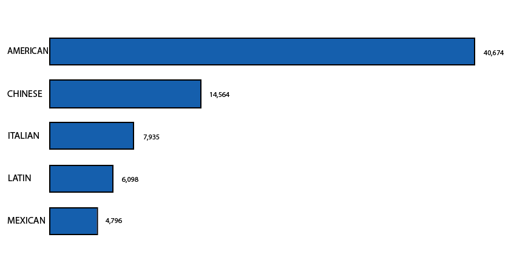

A Look Behind NYC's Restaurant Grades
In 2010, the Department of Health under Mayor Bloomberg introduced the letter grade system. This scores restaurants on a points system which corresponds to either an A, B or C grade. The system requires the score be displayed in the restaurant’s window so that it is visible to potential customers. If a restaurant receives a grade that is lower than an A it can ask to be re-inspected in the same scoring cycle and display a grade pending sign in the meantime.
Receiving a B or a C grade has an adverse economic impact on restaurants. Not only do they have to pay large fines but they also experience fewer customers as these tend to stay away. Members of the Chinese community say that the grading system conflicts with their traditional style of cooking and believe that as a result it adversely impacts them.
